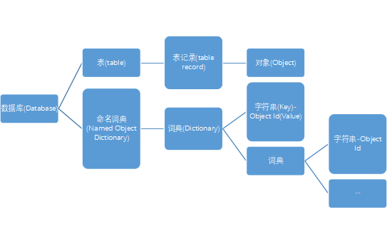
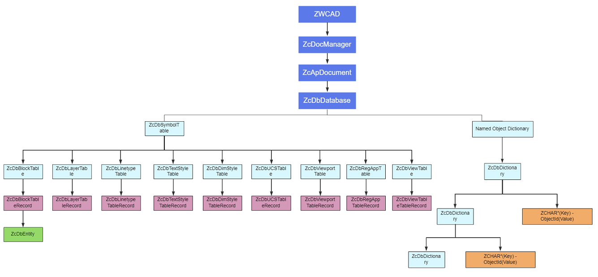

如果想要在中望CAD上高效地开发ZRX二次开发应用，你应该熟悉与你要开发的应用程序相关的中望CAD .ZRX实体、对象和功能。以下为中望CAD .接口类对象层次结构的综合说明，涵盖应用程序、文档、数据库及交互等核心模块：
文档对象（ZcApDocument）
每个打开的图形文件由ZcApDocument对象表示，核心功能包括：
1. 每个打开的图形有一个关联的文档对象，文档对象中包含了许多有用信息，如文件名，当前图形数据库，以及当前图形保存格式。
2. 通过新建或者打开已存在图形文件获取文档对象切换到当前文档对象。
DWG数据库、实体、符号表和词典
1. DWG数据库：ZWCAD数据库是用来存储组成ZWCAD图的对象，ZWCAD图是一个存储在数据库中的对象的集合。基本的数据库对象是实体、符号表和词典。
2. 实体：实体是在ZWCAD图内部表示图的一种特殊数据库对象，线、圆、弧、文本、实心体、区域、复合线和椭圆都是实体，用户可以在屏幕上看见实体并能对其进行操作。
3. 符号表和词典:符号表和词典是用于存储数据库对象的容器，这两个容器对象都映射一个符号表（文本串）到一个数据库对象，一个ZWCAD数据库包含一套固定的符号表，每一个符号表包含一个特定符号表记录类的实例，我们不能向数据库添加新符号表。层表（ZcDbLayerTable）是符号表之一，包含层表记录；块表（ZcDbBlockTable）也是一个符号表，包含块表记录。所有ZWCAD实体都属于块表记录。词典为存储对象提供了比符号表更加普通的容器。一个词典可以包含任何类型的ZcDbObiect 及其子类的对象；当ZWCAD创建新图时，ZWCAD数据库创建一个叫作“命名对象词典”的词典。对所有与数据库有关的词典，命名对象词典可以被视为主“目录表”。我们可以在命名对象词典内创建新词典，并在新词典中添加新数据库对象。

4. 数据库的调用：在ZWCAD编辑会话中，我们可以通过调用下面的全局函数来获得当前图的数据库：zcdbHostApplicationServices()->workingDatabase()。
用户交互
心功能包括：
1. 输入与选择，如使用zcedGetXXX()获取用户输入的坐标或关键字，和通过SelectXXX()等方法实现实体筛选。
2. 命令执行，如调用zcedCommand()，zcedCmd()直接执行中望CAD内置命令或自定义命令。
3. 消息反馈，如利用zcutPrintf()向命令行输出提示信息。
层次结构示意图
这些对象以分层方式构建，其中中望CAD应用程序对象位于根节点。这种分层结构通常称为对象模型。下图显示了ZWCAD应用程序与ZcadBlockTableRecord（如模型空间）中的实体之间的基本关系。中望CAD ZRX中还有更多对象未在此处表示。
